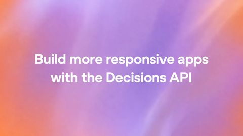
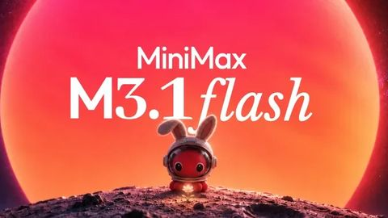
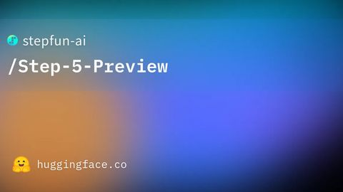
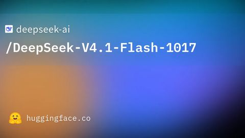
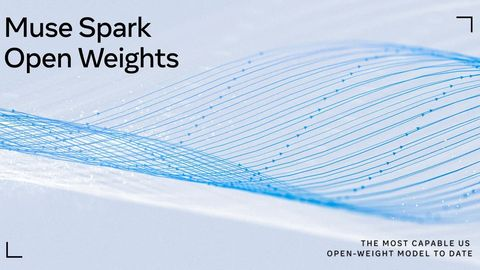
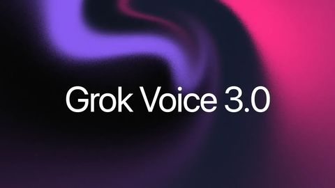
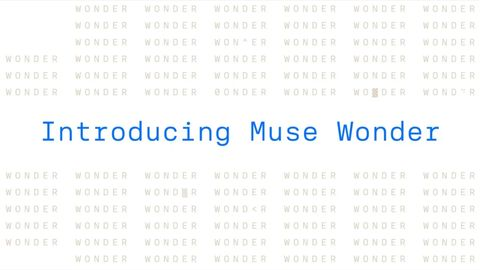
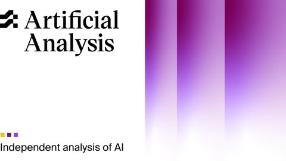
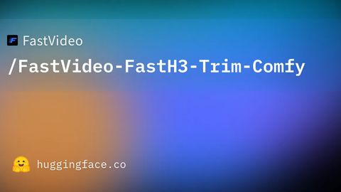

∞
往期
Archive
OpenAI Decisions API 正式上線：用 GPT-6 Luna 專門做「分類、選路、打分數」這類小決策，比一般呼叫快最多 10 倍，只收輸入費- Anthropic 推出 Claude Duet 研究預覽：會主動找你的 AI 代理 App，每天早上給簡報、背景幫你做事，動手前先問你
- ChatGPT 推出「上鎖聊天」：用 4 位數 PIN 或 Face ID／Touch ID 鎖住私密對話，免費版也能用

MiniMax 推出 M3.1 Flash：代理、寫程式、操作電腦能力大升級，推論快近 3 倍、使用成本降 70%
階躍星辰開源旗艦代理模型 Step 5 Preview：600B MoE、每次只動用 27B、支援百萬字元上下文
DeepSeek 推出 V4.1-Flash-1017：程式與代理任務分數全面提升，權重同步開源，另開放搜尋 API- NVIDIA 開源 Nemotron 3.5 Super VL 與 Bolt：120B 多模態代理模型，另有 24GB 可本地跑的版本

Meta 釋出 Muse Spark Open 權重：816B 參數、可在兩台 Mac Studio 上本地跑
Grok Voice 3.0：語音對語音模型登上 Artificial Analysis 第一，API 價格與 2.0 相同- Gemini 4 Argon 全球正式開放：Pro／Ultra 訂戶可在 Gemini App 使用，API 限時 2／10 美元

Meta 發表 Muse Wonder 與 Muse Wonder Full：主打個人／專業代理，Full 僅 Muse Code 訂戶
Vidu Q4 Preview：支援 4K／10-bit、單次 16 秒，最多 15 張參考圖- MiniMax H3、Qwen Image 2.1、Krea 2
- MiniMax H3、Qwen Image 2.1、Krea 2
- MiniMax H3、Qwen Image 2.1、Krea 2

MiniMax H3、Qwen-Image 2.1、Krea 2
沒有符合條件的期數。